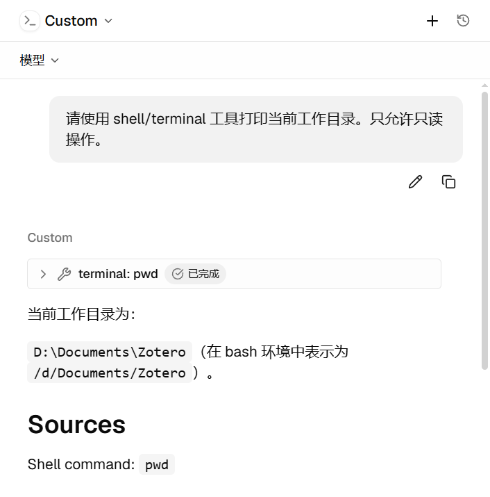
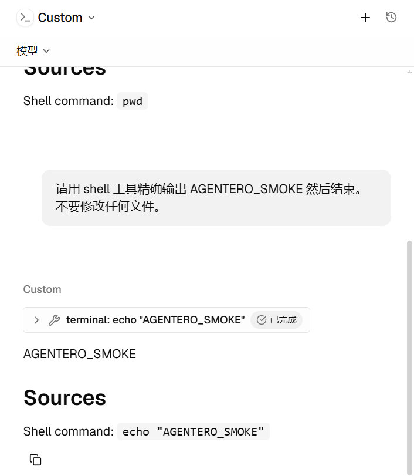

Windows ACP 终端工具 Pending/Error：Hermes MSYS2 挂死与 Host 侧缺陷¶
状态：已修复（Host 侧缺陷已修；Hermes 自家 terminal 工具的挂死属上游问题——已提
#103398 + PR
#103502，受影响机器以环境变量绕过 + local.py 热修过渡）
影响面：Windows → Agent 会话终端类工具调用（Pending 卡片 / Error 卡片 / kill·release 失效）→ cargo test（Windows 测试二进制无法启动，独立缺陷）
相关代码：
src-tauri/src/features/agent/acp/terminal.rs— manager 锁粒度、EOF 等待、kill 通路、超时src-tauri/src/features/agent/acp/client.rs/session/run.rs/service.rs—simplified_agent_cwd（\\?\扩展 cwd 规范化）、.terminal(true)能力宣告（session/run.rs的prepare_run_turn）src-tauri/build.rs— Windows 测试二进制 Common-Controls v6 manifest- 前端：
src/lib/agent/chat-state.ts（applyToolToLines/failIncompleteTools）、src/components/agent/hooks/use-agent-session-runtime.ts - 设计总览：
../backend/agent.md（ACP terminal 能力小节）、../test/release-checklist.md（11.1.10 / 11.1.11）
1. 问题现象¶
Windows 上构建/安装的 Agentero 中，ACP Agent（内置 Hermes、自定义
hermes.exe -p <profile> acp）的终端类工具调用出现两种表现：
terminal: pwd等卡片停留在 Pending 数分钟；- 卡片变为 Error，但对话中仍能看到正确输出（如工作目录），或由
python: import os兜底完成。
发布版在某些时点表现正常，源码构建持续复现，一度指向"源码回归"。
2. 排查结论：症状与缺陷分属三层¶
2.1 症状真因在 Hermes 上游（非 Agentero terminal 实现）¶
- Hermes 的 ACP 适配器（
acp_adapter/）不调用 ACP 客户端terminal/create|output|wait_for_exit|kill|release——"terminal: pwd" 卡片 是其自家tools.terminal_tool（本地持久 Git Bash）经session/update转发的名字（acp_adapter/tools.py:97-101的f"terminal: {cmd}"）。 因此 Agentero 的terminal/*实现是否正确，不影响该症状。 - 挂死点：
tools/environments/local.py的_find_bash()→_bash_starts()探针。从 Hermes python 进程内 spawn 的 Git for Windowsbin\bash.exe在 MSYS2 re-exec（bin\..\usr\bin）后死锁（0 CPU、永不退出），毫秒级 探针命令挂满执行器 420s 超时。系统强制 ASLR 未启用（ForceRelocateImages : NOTSET），属 fork/spawn 死锁的另一变体，且天然间歇性——解释了 "发布版某次成功、源码构建持续失败"的观感。 - 复现与证据：绕开 Agentero 的最小 ACP 客户端直连 Hermes 可完整复现
（tool_call → 420s 静默 → failed →
execute_code0.17s 兜底成功）； Hermesstate.db同时记录timed out after 420.0s。 - 已验证绕过：
HERMES_GIT_BASH_PATH指向usr\bin\bash.exe（跳过bin\bash.exe包装层重执行）后 terminal 恢复（2/2 运行 exit 0， ~33s 含内部探测重试）。MSYS=disable_pcon无效。
2.2 Host 侧真实缺陷（本轮修复）¶
Hermes 未触发它们，但对 Kimi Code 等真正委托 terminal/* 的 agent 是必修：
- manager 锁跨无限 await：
src-tauri/src/features/agent/acp/terminal.rs的请求闭包terminals.lock().await.<op>(…).await使任一wait_for_exit/output挂起即阻塞同连接全部终端请求（含下一个create与kill/release）， 规范推荐的"超时 → kill → output → release"自救配方必然死锁。 output()等待管道 EOF（2a45cdd5引入）：违反 ACP 规范 "retrieves the current terminal output without waiting for the command to complete"；Windows 上孙进程继承句柄使 EOF 永不到来。kill被wait()占用的 child 锁堵死：spawn_waiter持child.lock()跨child.wait()，kill排在同一锁后，无法自救。- 短进程退出通知竞态：旧实现先查状态，再订阅
watch并等待下一次changed()；进程若恰在两步之间退出，终态会被新 receiver 视为已读，wait_for_exit永久等待。修复后保留初始 receiver，以send_replace发布终态， 并用wait_for(Option::is_some)先检查当前值。 \\?\扩展 cwd 传给 ACP 会话：前端可能送入 canonicalize 后的\\?\D:\…；Hermes 等基于 MSYS2 的 shell 无法cd进\\?\路径， 且子进程 POSIX cwd 初始化失败后 mktemp/cd 全部 ENOENT。本地 ACP 的 run / warm / list / load 入口统一经simplified_agent_cwd规范化（list / load 收敛在service.rs的agent_cwd_or_local），这四个入口的终端默认 cwd 均复用 同一结果；扩展 UNC 形式保持不变。- ACP 分发循环被终端等待阻塞（PR #474 审查补充）：协议库逐条等待
handler 完成；仅释放 manager 锁仍不能让后续
kill进入 handler。 wait / kill / release 在分发时先获取或移除句柄，再通过connection.spawn等待并响应，让同连接继续处理消息，任务生命周期仍由连接管理。
修复要点：manager 锁只保护句柄存取；Child 所有权移入单一 controller
任务，kill 经 mpsc 控制通道 + oneshot ack；reader 排空限时 250ms/个并
abort；output 只快照当前缓冲；终端默认 cwd 兜底为会话 cwd。
2.3 Windows cargo test 瘫痪（独立缺陷，本轮 build.rs 修复）¶
测试二进制启动即 STATUS_ENTRYPOINT_NOT_FOUND（TaskDialogIndirect）：
Tauri 栈静态导入该 comctl32 v6 专属函数，而 tauri-build 的 manifest 资源
经 embed-resource 只发 cargo:rustc-link-arg-bins（仅 bin 目标），测试
二进制没有 manifest，加载器落到 comctl32 v5。与运行时行为无关、纯启动
失败，cargo check/编译均正常，故极易误判为环境问题。
修复：build.rs 对 Windows MSVC 追加
cargo::rustc-link-arg=/MANIFESTDEPENDENCY:…Common-Controls v6…（bin 的
manifest 内容本就相同，合并无副作用；GNU 工具链排除）。
3. 前端状态同步（本轮修复）¶
- 迟到的 tool update 曾被丢弃（只处理"最后一条 streaming 行"）：
applyToolToLines按toolCallId回写所属回合，迟到的 completed/failed 也能修正原卡片。 - 回合完成/失败/取消时，仍为 pending/in_progress 的卡片统一收敛为
failed（
failIncompleteTools），消灭永久 spinner；迟到终态仍可覆盖。 PR #474 审查补充：已结束回合继续接收迟到内容与终态，但忽略 pending/in_progress 状态，避免迟到进度重新激活 spinner；回归覆盖进度 → 完成 → 进度的乱序更新。
4. 验证¶
- Windows
cargo test --lib：717 通过、10 ignored（4 个既有平台相关失败）； 修复前测试二进制无法启动。 - 隔离 crate 全量终端测试 8/8（含"运行中 output 即时返回"、"wait 挂起时 kill 可用"两个核心回归场景）。
- PR #474 审查新增协议层回归：同一 ACP 连接先发送
wait_for_exit，再发送 output → kill → release，必须在长命令自然退出前完成；对象级测试无法覆盖 串行分发循环被阻塞的问题。 - ACP 探针实测：修复后 terminal 恢复（见 2.1 绕过验证）。
- 前端 vitest 34/34；
tsc --noEmit干净。 - 真机端到端（安装版，自定义 ACP Agent / Hermes）：
terminal: pwd与terminal: echo "AGENTERO_SMOKE"均"已完成"、输出正确（覆盖 PowerShell 兜底路径）：


5. 教训与后续¶
- 用户可见症状 ≠ 本仓库缺陷：先确认 agent 是否真的走 ACP 客户端 委托（读 agent 源码/抓 wire），再动 Host 侧实现。
- 测试二进制的 Windows 资源问题在启动瞬间爆，编译/检查全绿， 排查时应优先看"进程是否启动"，而非测试断言。
- 后续跟踪：
- Hermes 上游已提：#103398 （原始报告）+ #103502 （WSL 存根排除，open）；官方在途：#83413 （探针 stdin）+ #103402 （杀进程树，In Review）；分诊确认同机制上游单 #74982；
- 三 PR 全部合并发版后：移除
HERMES_GIT_BASH_PATH环境变量绕过 +git checkout -- tools/environments/local.py还原本地热修； - 可选增强：自定义 Agent 表单暴露 env 编辑（后端
AgentDescriptor.env已支持，UI 未暴露），便于按 agent 注入此类环境变量。
6. Hermes 本地热修（第二层缺陷）¶
重测发现第二层：Git Bash 探针在冷启动竞态下失败时，_find_bash() 的
最后候选 shutil.which("bash") 会解析到 System32 的 WSL bash 存根
（进程轮询可捕获 System32\bash.exe + wsl.exe + wslhost.exe 同时
出现），WSL bash 自身探针能通过，于是快照脚本跑在 WSL 文件系统视图里——
/c/、/d/ 不存在 → mktemp/cd 全部 ENOENT → Error。agent 的 python
兜底甚至会报告 /mnt/d/Documents/Zotero（WSL 挂载形式）。
受影响的 Hermes 安装（git clone 安装，v0.21.0 验证）需应用如下热修：
tools/environments/local.py 的 which("bash") 兜底排除系统目录下的
WSL bash 存根——路径经 %SystemRoot%（回退 %WINDIR%）解析并两侧
normcase 比较，非 C:\Windows 系统盘同样生效（硬编码 C:\Windows
会在非标准系统盘漏判）。探针全败时抛既有结构化错误
"Git Bash not found…"，而不是静默降级到 WSL。验证四种场景：
正常路径仍选中 Git Bash / 无 Git Bash 时抛清晰错误 / bin 与 usr\bin
两种布局均可 / 非 C 盘 SystemRoot 比较为真；应用后端到端探针 terminal
恢复（exit 0，~18s）。注意：hermes 自更新（git pull）会覆盖该热修，
需重打或等上游 #103502
合并。